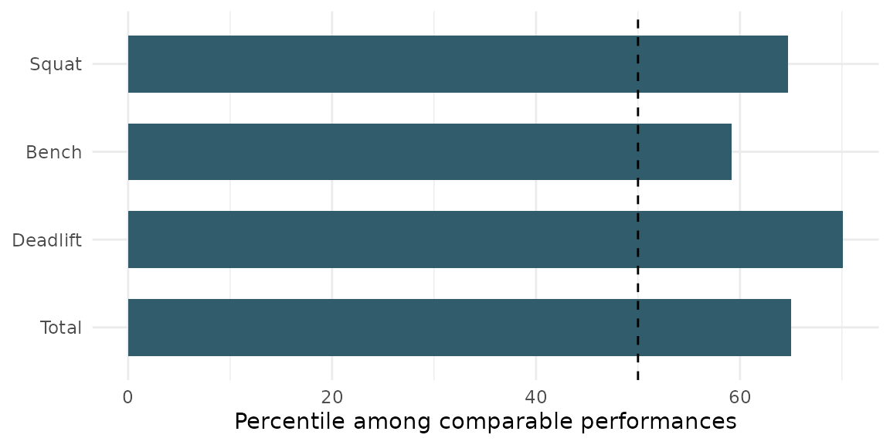

Purpose
bonafide is designed for a powerlifter or coach
asking:
How does a lifter’s performance compare with similar competitors, and which lift appears to offer the greatest opportunity for improvement?
It provides a descriptive benchmark, not a training prescription. A “peer” is a historical competition performance with the same sex and equipment category and a bodyweight inside the selected window. Age can also be included.
Install and launch
Install from GitHub and launch the included app:
install.packages("remotes")
remotes::install_github("ETC5523-2026/etc5523-assignment-4-adhi0021")
library(bonafide)
run_powerlifting_app()The app opens in your browser (or the RStudio/Positron viewer). To stop it, close the window and press Esc (or the stop button) in the R console.
Using the app
- In the sidebar, choose the competition sex and equipment category, enter the bodyweight and set the bodyweight window. Start with the default ±5 kg.
- Optionally tick Also match by age. This gives a more specific peer group, but age is missing for many records, so the group gets smaller.
- Enter the best successful squat, bench press and deadlift. The results update automatically.
- A note at the bottom of the sidebar explains the equipment categories and windows, and each chart has a footer explaining how to read it.
Interpreting the outputs
| App output | What it shows | How it answers the question |
|---|---|---|
| Peer-group message | Green: at least 30 matching records. Amber: fewer than 30. Red: none. | Tells you whether the comparison is trustworthy before you read anything else. |
| Percentile by lift | The percentile of each lift and the total, with a dashed line at 50% (the typical peer). | The shortest of the three lift bars is the lift with the most relative room to improve. |
| Your total among peers | A histogram of peer totals, with your total as a red line. | Shows overall strength in context, not just as a single number. |
| What this means | A one-sentence summary, plus a table of your lifts, the peer medians and the percentiles. | Puts the answer into words and translates percentiles back into kilograms. |
The percentile chart in the app is built from the same
summary table that compare_lifter() returns.
Here is the same chart for the example lifter used below:
library(bonafide)
library(ggplot2)
res <- compare_lifter(powerlifting, sex = "F", equipment = "Raw",
bodyweight = 63, squat = 110, bench = 60, deadlift = 140)
ggplot(res$summary, aes(x = factor(lift, rev(lift)), y = percentile)) +
geom_col(fill = "#315c6b", width = 0.65) +
geom_hline(yintercept = 50, linetype = "dashed") +
coord_flip() +
labs(x = NULL, y = "Percentile among comparable performances") +
theme_minimal()
A worked finding. For this raw female lifter at 63 kg, the Bench has the lowest percentile (59.2%), compared with 70.1% for the strongest lift, across 13,921 comparable performances. Relative to similar competitors, the bench is the lift with the most room to improve. A good check in the app is to widen and narrow the bodyweight window: if the same lift stays the lowest, the finding is robust to how “similar” is defined.
Use the comparison function
The app uses the exported compare_lifter() function. The
same analysis can be reproduced directly:
example_result <- compare_lifter(
powerlifting,
sex = "F",
equipment = "Raw",
bodyweight = 63,
squat = 110,
bench = 60,
deadlift = 140,
bodyweight_tolerance = 5
)
example_result$summary
#> lift entered_kg peer_median_kg percentile
#> squat_kg Squat 110 102.5 64.7
#> bench_kg Bench 60 57.5 59.2
#> deadlift_kg Deadlift 140 127.5 70.1
#> total_kg Total 310 290.0 65.0
example_result$n
#> [1] 13921
example_result$weakest_lift
#> [1] "Bench"The percentile is the percentage of matching competition performances at or below the entered result. For example, a deadlift percentile of 70 means the entered deadlift equals or exceeds 70% of records in that peer group. It does not mean that the athlete is 70% as strong as the best competitor.
The lowest lift-specific percentile is labelled as a potential priority. This conclusion is relative to the selected peer group. Technique, injury history, programme phase, and coaching judgement are not in the dataset.
Weak states
The app handles three kinds of weak state:
- Invalid input. A blank lift, a bodyweight outside 30–250 kg, a missing age while age matching is on, or a total above 1,500 kg (usually pounds entered as kilograms) shows a message explaining what to fix, instead of a chart.
- Empty peer group. If no records match (for example, a 150 kg multi-ply woman), a red message suggests widening the window, and the charts are replaced with an explanation.
- Small peer group. If fewer than 30 records match, the results are still shown, but with an amber warning that the percentiles are unstable.
The same states are visible from code:
empty <- compare_lifter(powerlifting, sex = "F", equipment = "Multi-ply",
bodyweight = 150, squat = 200, bench = 120,
deadlift = 200, bodyweight_tolerance = 1)
empty$n
#> [1] 0
empty$weakest_lift
#> [1] NAData preparation and limitations
The script data-raw/prepare_powerlifting.R reproducibly
creates the packaged data from openpowerlifting.csv. It
selects the documented fields and keeps records with positive bodyweight
and all three positive lifts.
Important limitations are:
- a row is a competition performance, not a unique athlete;
- repeat competitors may therefore influence the distribution;
- incomplete and unsuccessful performances are excluded;
- this historical extract does not contain meet date, federation, or location; and
- judging standards and competition populations can differ across federations.
The app should therefore be used for exploration and informed discussion, not current rankings, causal claims, or medical and training advice.